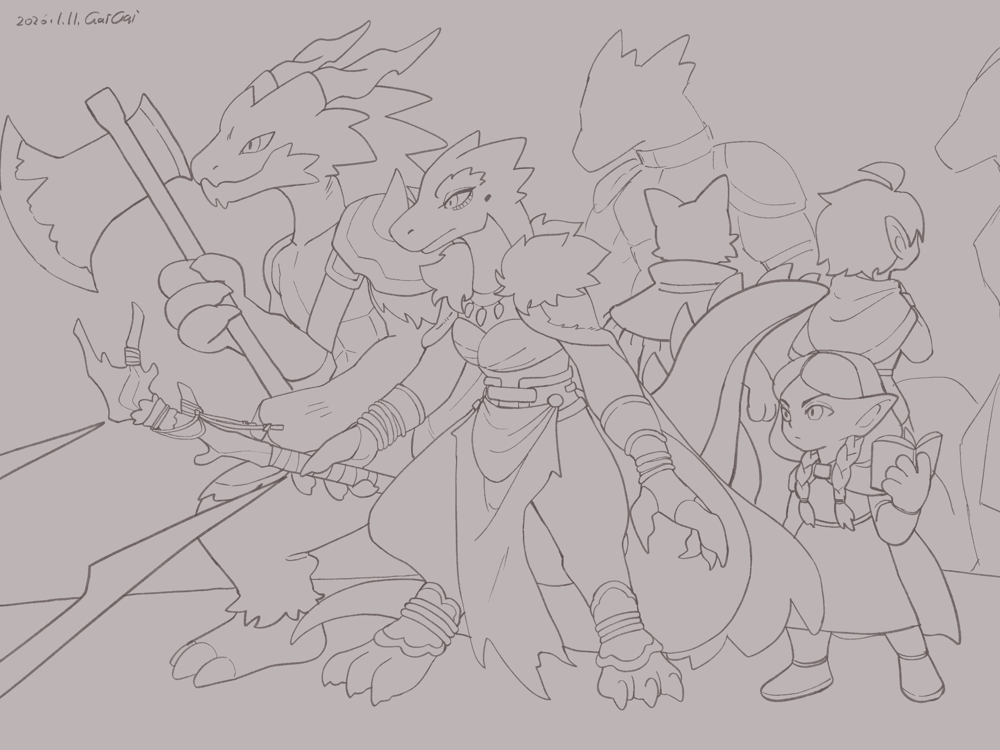

Chapter 1: Unfamiliar Hometown
The Unacknowledged Child

The Unacknowledged Child
15049.05.20
騎著Aryliths家贈與的馬匹，中途之家花了大約兩週的時間，來到了雷亞的家鄉之一：銀龍口中的萊斯諾(Leisnor)。厚重的城門外，兩名警戒的龍人衛兵並未刻意刁難，但從他們的眼神可以看出，這不是個歌舞昇平的城鎮。雷亞近鄉情卻，複雜的心情全寫在臉上。
冒險者們依衛兵的指示，騎著馬入城後，將馬匹停在城門內。依照他們說法，萊斯諾城內禁止騎馬。放眼望去，城內清一色是龍人，表情肅穆，並未多看冒險者們一眼，黃昏的街道上，他們像是各自忙著緊迫的事務般，讓阿龍覺得與瞳是龍人城鎮的拉撒拿大相徑庭。
由於城內大家都說龍語，雷亞又因為不想被認出來，盡可能低調（他拉上他的帽兜，把自己屬於蜥蜴人特徵的部分遮住。他過去從他的師父口中聽說，萊斯諾與他的另一個家鄉，以蜥蜴人為主的克萊芬(Clyphen)長年緊繃，戰線一觸即發，他可不想當引發戰爭的導火線），阿龍嘗試和路上看起來較為和善的居民說話，詢問旅店的位置。
冒險者們入住旅店後，一同外出覓食。依照阿龍的直覺判斷，越往城內，越有機會有餐館，於是大家便往城內走。
突然，數把長矛刺出，中途之家冷不防的被捲入戰鬥。四名龍人嘗試包圍他們，阿龍和雷亞各制服住一名龍人，但毛毛和羅羅則因為被攻擊到，憤而將他們抓到的龍人殺死。定睛一看，這幾名龍人穿著的竟是城內的衛兵服，這讓情勢變得很不妙。兩名身強力壯的軍士竄出，比起被制服的衛兵們，他們的長劍更為致命。中途之家發現敵人越來越強硬，甚至不久後又有弓兵埋伏。阿龍與雷亞聽見衛兵們用龍語喊著「包圍他們」、「抓住他們」，也許最好的策略不是魯莽的誓死抗戰，而是接受失敗，然後見機行事。Maribel率先舉起了雙手以示投降，並傳訊叫羅羅冷靜。一名將軍冷酷的現身，嘲諷似的宣判中途之家的失敗，並指示其他衛兵將中途之家的手紛紛綁起來，押著他們往前走。
來到一棟建築物內，Maliya將軍直率地推開門，走了進去。衛兵們則壓著中途之家一一跪下。在他們面前的除了凶神惡煞的紅龍人Maliya將軍外，還有一名挺拔莊重的藍龍人，以及夾在他們中間，畏畏縮縮的金龍人。
金龍人自我介紹，是萊斯諾的市長，也就是龍冠，名為Saerus。他身邊的除了Maliya將軍外，則是大臣Galaestrel大人。阿龍回嘴他也是龍冠，而這引起了Galaestrel大人的注意。Galaestrel大人表示近期看到了一篇報導，寫到拉撒拿新任龍冠上任之事，也得知了這群與龍冠一起被綁的人就是報導中的「中途之家」。他告訴阿龍，前幾天有一名來自拉撒拿的信差，說要來這裡找拉撒拿的龍冠。Galaestrel大人請人將信差帶了出來。
這名銀龍人信差很明顯狀況不好，在萊斯諾想必備受欺凌。信差跪在阿龍面前，表示在中途之家離開拉撒拿不久後，一名男人落魄的來到了拉撒拿，喊著要見龍冠。這名斷了雙手的男人自稱Oswald，他表示希望龍冠來和他一起拯救一位名叫Penny的女子。聽見Penny的名字，阿龍整個人精神都起來了。在Maliya將軍基於他的身份的許可下，阿龍手上的麻繩被解開。他知道關於Penny的消息是他一直在等待的，如今雖然聽起來不是好消息，但他無法放著不管。其他冒險者們疑惑著，才花了兩週時間來到萊斯諾，難道又要騎馬回拉撒拿了嗎？他們馬上被Maliya將軍喝斥，表示那是人家拉撒拿龍冠的事，不代表他們就能跟龍冠走。
阿龍深切明白，他必須回去，但他也無法放下這群一同冒險的夥伴。在將軍的許可下，阿龍一個一個和夥伴們道別。他將在貝瑟頓拿到的戒指套在Maribel指頭上，表示自己會回來的；阿龍看向鑰，希望鑰能好好照顧這群衝動的孩子們；接著是羅羅，他從羅羅口袋裡任性地抓走了幾顆糖果，表示之後會帶更多糖果回來給他；對於同樣有藍尾巴以及龍人血脈的雷亞，阿龍也給予祝福，並將堂姐贈與他的武器交給雷亞保管；最後，阿龍走向毛毛，回憶著大家初相見時，他背著毛毛跳樓的激情，掏出了當時用毛毛的毛製成的耳塞，想還給毛毛，但遭到毛毛拒絕了。最終，阿龍看向站在門口等候的信差，與中途之家揮揮手後，暫時別離了。
Maliya將軍走到大家面前，向中途之家簡單說明萊斯諾與克萊芬的情勢：萊斯諾長期認定克萊芬是他們不可分割的一塊，因此他們計劃動用武力把克萊芬拿下。大臣Galaestrel大人嘗試打斷，表示不可以這樣衝動用武力，兩個城鎮本來就應該是分治而立，並沒有誰屬於誰。但他沒說幾句話，就被將軍搧巴掌而打斷，而當然，龍冠Saerus毫無說話的餘地。將軍表示，他們決定讓中途之家作為間諜，到克萊芬潛藏一週，時間到時，會有人接他們回來，若執行順利，會給每個人一枚白金幣作為獎賞。冒險者們原本對此十分反感，但聽到了豐厚的報酬後，便接受了。在將軍的指示下，兩名衛兵拿了粗重的麻繩，將冒險者們串起，領著他們走出了房子，一路離開萊斯諾。
城門外，冒險者們試著和壓著他們的衛兵攀談，得知他們對將軍的強勢也有不滿，但他們對於克萊芬的所屬權立場與將軍一致。城外遠處，一雙眼默默地觀察著這串詭異的行徑。那人放出了一隻梟，梟飛到了前方衛兵的麻繩前，試圖啄擊，但沒能成功，只讓衛兵感到煩躁。不久後，大家來到克萊芬的城門口。兩名萊斯諾的衛兵和克萊芬城門口的衛兵攀談了幾句（雷亞聽見他們說著「上級要把這些人放進城內一段時間」，克萊芬的衛兵表示理解）。在中途之家被鬆綁後，克萊芬的大門敞開，他們便紛紛走了進去。陌生的人影也趁著大門關上之前竄了進去。
克萊芬的氛圍與萊斯諾天壤地別。城門口內是滿滿的攤販，食物的香氣逼人，一轉眼，毛毛已經買了兩隻雞腿了。竄入門口的那人拍了拍雷亞的肩膀。雷亞一回頭，看見一名深綠色皮膚的蜥蜴人。他自我介紹名為Ravi，認識雷亞的師父，也知道雷亞的身世。雷亞心中有太多問題想請教，於是在Ravi的帶領下，大家前往附近一間酒館，叫了一些食物來果腹。